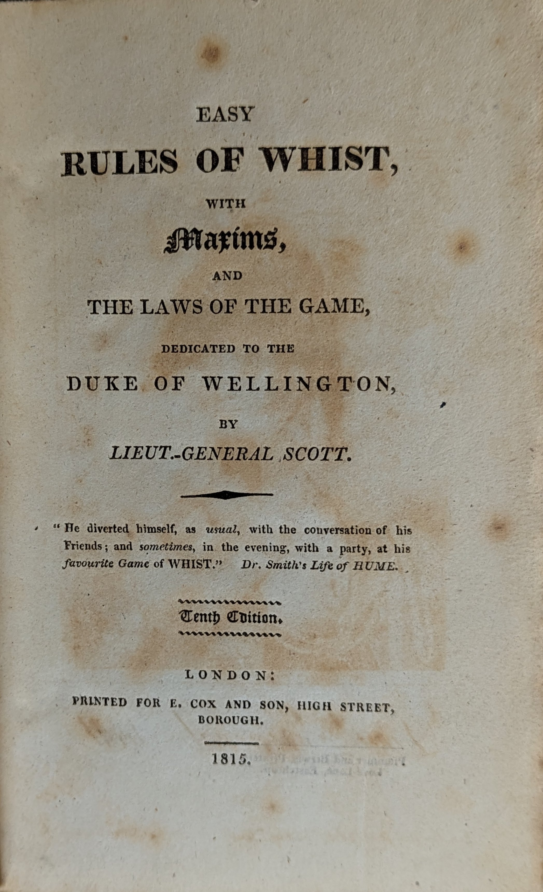

 |
Title: |
EASY | RULES OF WHIST, | WITH | Maxims, | AND | THE LAWS OF THE GAME, | DEDICATED TO THE | DUKE OF WELLINGTON, | BY | LIEUT.-GENERAL SCOTT. | [short rule] | “He diverted himself, as usual, with the conversation of his | Friends; and sometimes, in the evening, with a party, at his | favourite Game of WHIST.” Dr Smith's Life of HUME. | [short rule] | Tenth Edition. | [short rule] | LONDON: | PRINTED FOR E. COX AND SON, HIGH STREET, | BOROUGH. | [short
rule] | 1815. |
| Collation: |
8o: [A]8 B8 C4 [$¼ signed]; 20 leaves, pp. [i–v] vi [vii–viii], [9] 10–40 |
| Contents: |
Signature (Page) Reference |
Contents |
Signature (Page) Reference |
Running Titles |
| A1r (i) |
half title |
|
|
| A1v (ii) |
blank |
|
|
| A2r (iii) |
title |
|
|
| A2v (iv) |
‘[short rule] | Plummer and Brewis, Printers, | Love-Lane, Eastcheap.’ |
|
|
| A3r–A3v (v–vi) |
‘TO | HIS GRACE | FIELD MARSHALL | THE DUKE OF WELLINGTON, K. B. | [...]’ |
|
|
| A4r (vii) |
‘CONTENTS. | [...]’ |
|
|
| A4v (viii) |
blank |
|
|
| A5r–B6v (9–28) |
‘THE RULES OF WHIST. | [...]’ |
|
|
| B6v–C3r (28–37) |
‘[...] | THE LAWS OF WHIST. | [...]’ |
|
|
| C3v–C4v (38–40) |
‘ORIGIN AND DESIGN | OF | CARD-PLAYING. | [...] | [colophon]’ |
|
|
| Plates: |
Frontispiece hand-colored engraving: Portrait of the author, captioned "Lieut. General Scott." with note "London Publiſhed
Oct.r 20th, 1815, by E. Cox & Son. 39 High Street, Southwark." |
| Publisher: |
Elizabeth Cox and Son |
| Printer: |
Plummer and Brewis (colophon) |
| Price: |
2s.6d. (label) |
| References: |
Horr 1153 |
| Colophon: |
‘Plummer and Brewis, Printers, | Love-Lane, Eastcheap.’ |
| Copies Seen: |
Levy [1708] |
| Notes: |
With no recorded institutional copies, how did Horr know of this book to include it
in his bibliography? It is also noted in Courtney, English Whist and Whist Players, London: Richard Bentley and Son, 1894, page 370. |